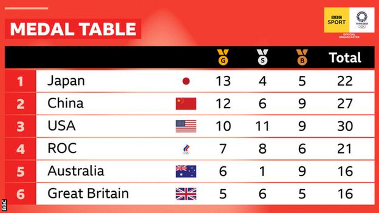
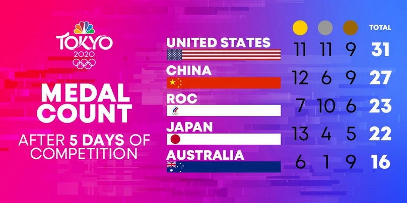

Das Simpson-Paradoxon
Breno Menezes
Überblick / Gliederung
- Einführung
- Beispiel
- Gibt es eine Lösung?
- Abschluss
Einführung
Einführung
Statistik: Sammlung, Organisation, Analyse, Interpretation und Präsentation von DatenInterpretation ist subjektiv
Interpretation ist subjektiv
Interpretation ist subjektiv
Interpretation ist subjektiv
Das Simpson-Paradoxon
"... wird eine Gesamtstichprobe in Teilstichproben unterteilt, so können sich in allen Teilstichproben Zusammenhänge zeigen, die systematisch nicht dem Zusammenhang in der Gesamtstichprobe entsprechen oder gar konträr ausfallen."[1]Beispiel
Beispiel 1
Krankenhaus A
900/1000 geheilt
Krankenhaus B
800/1000 geheilt
besser ins Krankenhaus A gehen, oder?
Beispiel 1
Krankenhaus A
Schwere Fälle: 30/100
Einfache Fälle: 870/900
30% & 96.7%
Krankenhaus B
Schwere Fälle: 210/400
Einfache Fälle: 590/600
52.5% & 98.3%
Beispiel 1
- Krankenhaus B hat in beiden Fällen bessere Überlebensraten
- Unbeachtete Variablen können die Schlussfolgerung über einen Fakt völlig verändern (Schweregrad)
Outline
5
October
Kickoff
Vote thesis topics
NOW
02-17
November
FlexNow2 Registration
7
December
Early Submission
Individual Work
4+5
January
Block Seminar
and Presentation
and Presentation
15
January
Submission Seminarthesis
Seminar Thesis Topics: Frameworks
MPI
MPI_Init(NULL, NULL);
// Get the number of processes
int world_size;
MPI_Comm_size(MPI_COMM_WORLD, &world_size);
// Get the rank of the process
int world_rank;
MPI_Comm_rank(MPI_COMM_WORLD, &world_rank);
// Get the name of the processor
char processor_name[MPI_MAX_PROCESSOR_NAME];
int name_len;
MPI_Get_processor_name(processor_name, &name_len);
// Print off a hello world message
printf("Hello world from processor %s, rank %d out of %d processors\n",
processor_name, world_rank, world_size); OpenMP
- GPU and CPU parallelization
- Pragmas
#pragma omp parallel for
for (int i = 0; i < 100000; i++) {
a[i] = 2 * i;
}
int v1[N], v2[N], v3[N];
#if defined(nvptx)
#pragma omp target teams distribute parallel loop map(to:v1,v2) map(from:v3)
for (int i= 0; i< N; i++)
v3[i] = v1[i] * v2[i];
#else
#pragma omp target parallel loop map(to:v1,v2) map(from:v3)
for (int i= 0; i< N; i++)
v3[i] = v1[i] * v2[i];
#endif
CUDA
cudaMemcpy(d_x, x, N*sizeof(float), cudaMemcpyHostToDevice);
cudaMemcpy(d_y, y, N*sizeof(float), cudaMemcpyHostToDevice);
// Perform SAXPY on 1M elements
saxpy<<<(N+255)/256, 256>>>(N, 2.0f, d_x, d_y);
cudaMemcpy(y, d_y, N*sizeof(float), cudaMemcpyDeviceToHost);OpenCL
- CPU, GPU, DSP, and FPGAs parallelization
- Open standard from the Khronos Group
- Altera, AMD, (Apple), ARM, Creative, IBM, Imagination, Intel, Nvidia, Qualcomm, Samsung, Vivante, Xilinx, and ZiiLABS
public:
std::vector<cl::Platform> platforms;
int platformNum;
OpenClPlatformList()
{
platforms= std::vector<cl::Platform>();
cl::Platform::get(&platforms);
platformNum= platforms.size();
}
Muesli
msl::setNumRuns(nRuns);
msl::setNumGpus(nGPUs);
...
DMatrix<T> Matrix(n, n, sqrtp, sqrtp, (T)0.0);
Matrix = matmult(A, B, &C, tile_width);
Matrix.show();
...
Muesli
Algorithmic skeletons [1]
[1]
Matrix.mapIndexInPlace(add1);
Seminar Thesis Topics: Algorithms
Gaussian Eliminations
"[...] algorithm in linear algebra for solving a system of linear equations." Wikipedia [1]
[1]O(n3)
Gaussian Eliminations


Gaussian Eliminations

Gaussian Eliminations

Gaussian Eliminations

Gaussian Eliminations

Gaussian Eliminations

Parallel Fast Fourier Transformation
"[...] converts a signal from its original domain (often time or space) to a representation in the frequency domain and vice versa." Wikipedia [1]
[1]
 [2]
[2]![[2]](https://i.stack.imgur.com/Y0Jme.jpg){kind=link}
O(N2)
Parallel Vectorization
for (i=0; i<n; i++)
c[i] = a[i] + b[i];
↓
c[1] = a[1] + b[1];
c[2] = a[2] + b[2];
c[3] = a[3] + b[3];
c[4] = a[4] + b[4];
...Parallel Branch and Bound
Used to solve combinatorial problems, B&B makes use of a tree search strategy to enumarate all possible solutions to a problem, also applying rules to eliminate the possibilities that are unfeasible or lead to worse solutions than the ones that were computed already. [3]
Parallel FSS, PSO and ACO
Nature inspired algorithms used to solve optimization problems (continuous or discrete). They work based on the iteraction of simple individuals that exchange information and work together in order to accomplish together a more complex goal.Parallel FSS, PSO and ACO
Applications:- Traveling Salesman Problem
- Supply Chain Optimization
- Bin Packing Problem
- Parameter Optmization (i.e. ANN calibration)
- etc...